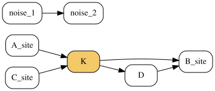
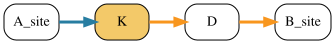

Global upstream and downstream PHONEMeS#
The signaling method BidirectionalPHONEMeS infers a network around kinases whose activities are known or estimated to change. It considers interactions both upstream and downstream of those kinases and chooses both parts together.
Use ordinary PHONEMeS when the starting nodes are known experimental perturbations, such as drug targets. Use the bidirectional method when the starting points are regulated kinases inferred from the data and the question is:
Which upstream and downstream signaling interactions jointly explain the phosphoproteomic measurements around these kinases?
import numpy as np
from corneto import Graph
from corneto.methods import BidirectionalPHONEMeS
A small runnable example#
Consider a regulated kinase K. Two measured sites can lie upstream of it, while B_site can be explained downstream through either a direct interaction or a two-step route. A disconnected interaction is included to show that irrelevant regions are removed during preprocessing.
pkn_edges = [
("A_site", "K"),
("C_site", "K"),
("K", "B_site"),
("K", "D"),
("D", "B_site"),
("noise_1", "noise_2"),
]
pkn = Graph()
pkn.add_edges(pkn_edges)
pkn.plot(
graph_attr={"rankdir": "LR"},
node_attr={
"fixedsize": "false",
"shape": "box",
"style": "rounded",
"margin": "0.08,0.04",
},
custom_vertex_attr={
"K": {"fillcolor": "#f3c969", "style": "rounded,filled"}
},
)

PHONEMeS minimizes its objective, so the sign of each phosphosite score has a direct interpretation:
a negative score rewards including the measured site;
a positive score penalizes including it;
a zero score marks a measured site as eligible without rewarding or penalizing it.
Here, A_site and B_site are supported by the data, whereas C_site is discouraged. The direct edge from K to B_site is deliberately made more expensive than the two-step alternative.
scores = {
"A_site": -3.0,
"C_site": 1.0,
"B_site": -3.0,
}
method = BidirectionalPHONEMeS(anchor_policy="both")
problem = method.build(
pkn,
regulated_kinases=["K"],
phosphosite_scores=scores,
edge_costs={
0: 0.2,
1: 0.2,
2: 2.0,
3: 0.2,
4: 0.2,
},
)
problem.solve(solver="scipy")
Problem(Minimize(Expression(AFFINE, UNKNOWN, ())), [Inequality(Constant(CONSTANT, ZERO, (14, 2))), Inequality(Variable((14, 2), _flow)), Inequality(Constant(CONSTANT, ZERO, (5, 1))), Inequality(Variable((5, 1), _dag_layer)), Equality(Expression(AFFINE, UNKNOWN, (5, 2)), Constant(CONSTANT, ZERO, ())), Inequality(Expression(AFFINE, NONNEGATIVE, (14, 2))), Equality(Expression(AFFINE, NONNEGATIVE, (14, 2)), Constant(CONSTANT, ZERO, ())), Equality(Expression(AFFINE, NONNEGATIVE, (14, 2)), Constant(CONSTANT, ZERO, ())), Inequality(Expression(AFFINE, NONNEGATIVE, (14, 2))), Inequality(Variable((14, 2), _flow)), Inequality(Variable((5, 1), anchor_active_downstream, boolean=True)), Inequality(Variable((5, 1), anchor_active_upstream, boolean=True)), Inequality(Constant(CONSTANT, NONNEGATIVE, (5, 1))), Inequality(Constant(CONSTANT, NONNEGATIVE, (5, 1))), Inequality(Expression(AFFINE, NONNEGATIVE, (1, 1))), Inequality(Expression(AFFINE, UNKNOWN, (1, 1))), Inequality(Expression(AFFINE, NONNEGATIVE, (1, 1))), Inequality(Expression(AFFINE, UNKNOWN, (1, 1))), Inequality(Expression(AFFINE, NONNEGATIVE, (5, 1))), Inequality(Expression(AFFINE, NONNEGATIVE, (5, 1))), Inequality(Variable((5, 1), anchor_active_downstream, boolean=True)), Inequality(Expression(AFFINE, NONNEGATIVE, (5, 1))), Inequality(Expression(AFFINE, NONNEGATIVE, (5, 1))), Inequality(Expression(AFFINE, NONNEGATIVE, (5, 1))), Inequality(Expression(AFFINE, NONNEGATIVE, (5, 1))), Inequality(Variable((5, 1), anchor_active_upstream, boolean=True)), Inequality(Expression(AFFINE, NONNEGATIVE, (5, 1))), Inequality(Expression(AFFINE, NONNEGATIVE, (5, 1))), Inequality(Expression(AFFINE, NONNEGATIVE, (5, 1))), Inequality(Expression(AFFINE, NONNEGATIVE, (5, 1))), Inequality(Variable((5, 1), edge_selected, boolean=True)), Inequality(Variable((5, 1), vertex_selected_downstream, boolean=True)), Inequality(Variable((5, 1), vertex_selected_upstream, boolean=True)), Inequality(Variable((5, 1), vertex_selected, boolean=True)), Inequality(Expression(AFFINE, UNKNOWN, (5, 1))), Inequality(Expression(AFFINE, UNKNOWN, (5, 1)))])
Reading the inferred network#
edge_selected is the complete biological network chosen for each condition. The directional arrays show whether an interaction is used to explain evidence upstream or downstream of an anchor. All of them use the normal biological PKN orientation, so upstream results do not need to be reversed.
upstream = problem.expr.edge_selected_upstream.value[:, 0] > 0.5
downstream = problem.expr.edge_selected_downstream.value[:, 0] > 0.5
selected = problem.expr.edge_selected.value[:, 0] > 0.5
# Retained biological interactions are stored first in processed_graph.
biological_edges = method.processed_graph.E[: selected.size]
def selected_interactions(mask):
return [
(next(iter(source)), next(iter(target)))
for (source, target), keep in zip(biological_edges, mask)
if keep
]
print("Upstream:", selected_interactions(upstream))
print("Downstream:", selected_interactions(downstream))
print("Combined:", selected_interactions(selected))
Upstream: [('A_site', 'K')]
Downstream: [('K', 'D'), ('D', 'B_site')]
Combined: [('A_site', 'K'), ('K', 'D'), ('D', 'B_site')]
The solution keeps the rewarded upstream site and excludes the penalized one. Downstream, it chooses the less expensive route through D instead of the costly direct interaction.
The following plot uses blue for upstream interactions, orange for downstream interactions, and purple if an interaction serves both roles.
selected_indices = np.flatnonzero(selected)
inferred_network = method.processed_graph.edge_subgraph(selected_indices)
edge_style = {}
for displayed_index, original_index in enumerate(selected_indices):
if upstream[original_index] and downstream[original_index]:
color = "#7b2cbf"
elif upstream[original_index]:
color = "#277da1"
else:
color = "#f8961e"
edge_style[displayed_index] = {"color": color, "penwidth": "3"}
inferred_network.plot(
graph_attr={"rankdir": "LR"},
node_attr={
"fixedsize": "false",
"shape": "box",
"style": "rounded",
"margin": "0.08,0.04",
},
custom_edge_attr=edge_style,
custom_vertex_attr={
"K": {"fillcolor": "#f3c969", "style": "rounded,filled"}
},
)

Choosing how anchors participate#
The constructor’s anchor_policy controls which side of every regulated kinase must be explained:
Policy |
Meaning |
|---|---|
|
Require an upstream or downstream explanation; select both when supported. This is the default. |
|
Require both an upstream and a downstream explanation. |
|
Require the downstream side and make the upstream side optional. |
"either" is usually the safest choice for exploratory analysis because it does not force a weakly supported side into the network. Use "both" only when the experimental design requires two-sided explanations for every anchor.
Multiple conditions#
Use build_many with matching condition names. Each condition receives its own inferred network. Interaction costs apply to their union, so an interaction shared by several conditions is charged once.
many_method = BidirectionalPHONEMeS(anchor_policy="either")
many_problem = many_method.build_many(
pkn,
regulated_kinases={
"control": ["K"],
"treated": ["K"],
},
phosphosite_scores={
"control": {"A_site": -3.0, "B_site": -2.0},
"treated": {"C_site": -2.5, "B_site": -3.0},
},
edge_costs={0: 0.2, 1: 0.2, 2: 2.0, 3: 0.2, 4: 0.2},
)
many_problem.solve(solver="scipy")
print("Per-condition selection shape:", many_problem.expr.edge_selected.shape)
print("Union across conditions:", many_problem.expr.edge_selected_any.value > 0.5)
Per-condition selection shape: (5, 2)
Union across conditions: [ True True False True True]
Why this differs from original upside-down PHONEMeS#
Original upside-down PHONEMeS solves a downstream problem and an upstream problem independently, then reports their union. That can be useful for exploration, but the final union is not itself an optimized solution.
BidirectionalPHONEMeS chooses both sides in one optimization. Consequently:
a phosphosite contributes its score once even if it is relevant to both sides;
an interaction cost is paid once when directions or conditions share it;
upstream and downstream alternatives can be chosen jointly;
acyclicity is checked on the complete network for each condition.
The method also uses exact connectivity pruning: it retains every interaction that can occur on a relevant directed path, rather than restricting candidates to shortest paths or a fixed path-length cutoff.
Scores and edge costs in real analyses#
Use compute_phonemes_scores as described in the ordinary PHONEMeS guide to calculate scores from p-values and optional fold changes. It accepts mappings, NumPy arrays, pandas Series, and pandas DataFrames for one or many conditions.
Pass interaction costs by original PKN edge index. Unspecified interactions use default_edge_cost. Negative costs reward an interaction, but selected interactions must still belong to an anchor-connected explanation.
edge_costs is global in build_many because PHONEMeS charges the cost of the combined network: if the same interaction is used in multiple conditions or directions, its cost is paid only once.
Advanced: the general Data interface#
Most users should prefer build or build_many. The general interface is available for workflows that already create CORNETO Data objects. It uses the vertex roles regulated_kinase, phosphosite, and regulated_kinase_phosphosite.
from corneto import Data
data = Data.from_dict(
{
"tumour": {
"features": [
{
"id": "K",
"mapping": "vertex",
"role": "regulated_kinase",
},
{
"id": "B_site",
"mapping": "vertex",
"role": "phosphosite",
"value": -2.1,
},
]
}
}
)
advanced_problem = BidirectionalPHONEMeS().build_from_data(pkn, data)
Advanced: implementation in CORNETO#
The details in this section are useful when extending the formulation or inspecting low-level results; they are not needed for ordinary analysis.
CORNETO first prepares exact upstream and downstream candidate regions. The optimization represents downstream paths in the PKN orientation and upstream paths through internal reversed copies of the same interactions. These internal copies are implementation details and are translated back to biological PKN orientation in every public edge-selection array.
Variable |
Meaning |
|---|---|
|
Direction-specific downstream selections |
|
Direction-specific upstream selections in biological orientation |
|
Directional union for each condition |
|
Union across conditions |
|
Vertices used in either direction |
|
Anchors activated on the downstream side |
|
Anchors activated on the upstream side |
|
Internal downstream connectivity values |
|
Internal upstream connectivity values |
|
Per-condition order used to exclude cycles |
Auxiliary reversed and boundary interactions appear after the retained biological edges in processed_graph. They support the mathematical formulation but never appear in the biological edge-selection arrays or objective.